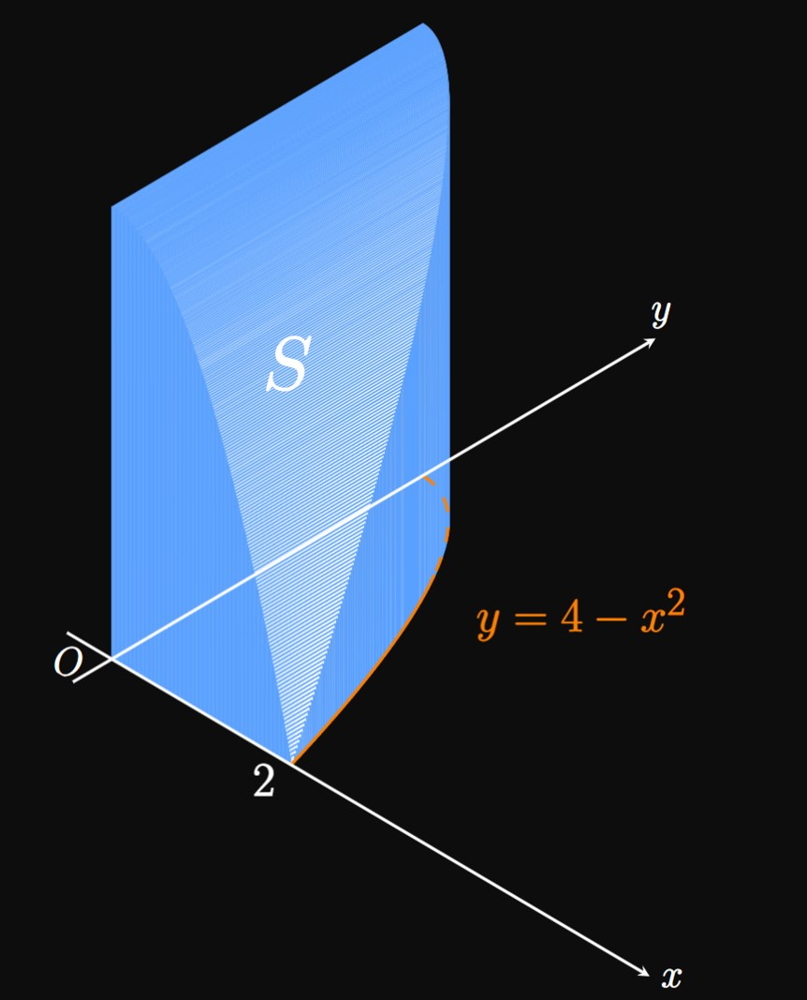
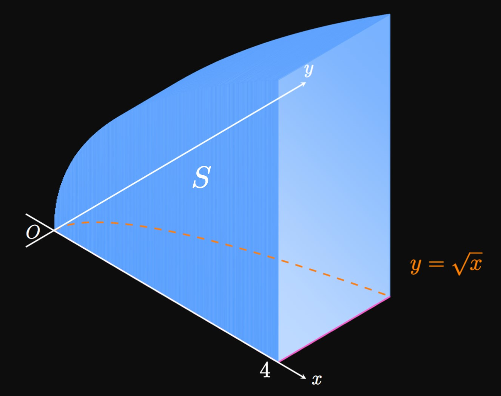
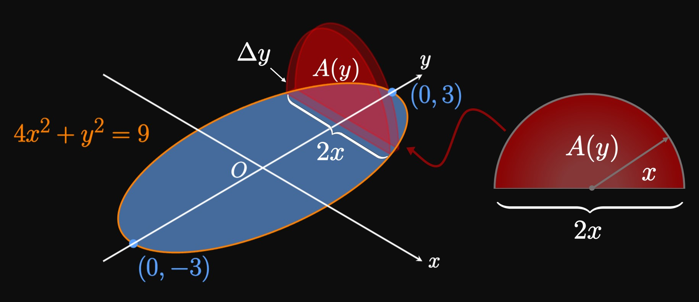

The concept of volume is already familiar to us.
We now elaborate on its definition:
Suppose you make a straight cut through a solid three-dimensional object.
The area through which you slice is a two-dimensional plane, which we call
a cross section.
Making a straight cut through a sphere's center, for example,
yields a circular cross section.
The volume of any solid with uniform cross-sectional area \(A\)
and height \(h\) is given by the formula
\[V = A h \pd\]
For example, a cylinder of radius \(r\) and height \(h\) has uniform cross-sectional area
\(A = \pi r^2,\) so its volume is \(V = \pi r^2 h.\)
Likewise, a rectangular prism of length \(\ell,\) width \(w,\)
and height \(h\) contains a uniform cross-sectional area of \(A = \ell w,\)
meaning its volume is \(V = \ell w h.\)
(See Figure 1.)
Nonuniform Cross Sections
Let's calculate the volume of a solid \(S\) whose cross sections are not uniform.
We place \(S\) in the \(xy\)-plane from \(x = a\) to \(x = b.\)
Let the continuous function \(A(x)\) be the area of the cross section to \(S\)
in a plane \(P_x\) that is
perpendicular to the \(x\)-axis at any point \(x.\)
Note that the solid's cross-sectional area \(A(x)\) changes continuously with \(x.\)
For example, at the endpoint \(a\) the cross section to \(S\) perpendicular to the \(x\)-axis
has area \(A(a).\)
Likewise, at \(b\) the cross section to \(S\) perpendicular to the \(x\)-axis has area \(A(b).\)
(See Figure 2.)
Imagine cutting \(S\) into \(n\) slabs of equal width \(\Delta x,\) similar to slicing a loaf of bread.
Over the interval \([a, b],\) these slabs form endpoints \(x_1, x_2, \dots, x_{n - 1}, x_n.\)
Choosing any sample point \(x_i^*\) in the general subinterval \([x_{i - 1}, x_i],\)
the \(i\)th slab of \(S\)—which has cross-sectional area \(A(x_i^*)\)
and height \(\Delta x\)—has a volume of
\[\Delta V = A(x_i^*) \Delta x \pd\]
Summing the volumes of all \(n\) slabs, we approximate the volume of \(S\) to be
\[
\ba
V \approx \sum_{i = 1}^n A(x_i^*) \Delta x \pd
\ea
\]
As \(n\) increases, the many thinner slabs better approximate the volume \(V.\)
So \(V\) is the limiting value of the sum as \(n \to \infty\)—that is,
\[V = \lim_{n \to \infty} \sum_{i = 1}^n A(x_i^*) \Delta x \pd\]
The right side is a Riemann sum for the function \(A(x),\) so we find
\begin{equation}
V = \int_a^b A(x) \di x \pd \label{eq:volume-A(x)}
\end{equation}
In words, if we are given a solid's cross-sectional area \(A\) at every \(x\)
in \([a, b],\) then we calculate the solid's volume by integrating \(A(x)\) from \(x = a\) to \(x = b.\)
VOLUMES WITH CROSS SECTIONS
Suppose that a solid lies between \(x = a\) and \(x = b\) such that
the area of its cross section perpendicular to the \(x\)-axis at any \(x\)
is given by the continuous function \(A(x).\)
Then its volume is given by
\begin{equation}
V = \int_a^b A(x) \di x \pd \eqlabel{eq:volume-A(x)}
\end{equation}
EXAMPLE 1
The region bounded by the parabola \(y = 4 - x^2\)
in the first quadrant
is the base of a solid whose cross sections
perpendicular to the \(x\)-axis are squares.
Calculate the volume of this solid.

Let's think of the \(xy\)-plane as the ground,
the base of the solid \(S\) shown in Figure 3.
Because cross sections perpendicular to the \(x\)-axis
are squares, the cross-sectional area to the solid at any \(x\) is \(A(x) = \par{4 - x^2}^2.\)
Figure 4 shows an approximating slice of \(S,\)
whose volume is
\[\Delta V = A(x) \Delta x = \par{4 - x^2}^2 \Delta x \pd\]
By \(\eqref{eq:volume-A(x)},\) the solid's volume \(V\) is given by
integrating \(A(x)\) from \(x = 0\) to \(x = 2,\) as follows:
\[
\ba
V &= \int_0^2 A(x) \di x = \int_0^2 \par{4 - x^2}^2 \di x \nl
&= \int_0^2 \par{16 - 8x^2 + x^4} \di x \nl
&= \par{16x - \tfrac{8}{3} x^3 + \tfrac{1}{5} x^5} \intEval_0^2 \nl
&= \boxed{\tfrac{256}{15}} \approx 17.067 \pd
\ea
\]
EXAMPLE 2
The region bounded by the curve \(y = \sqrt x,\)
the \(x\)-axis, and the line \(x = 4\)
is the base of a solid.
At each \(x,\) the cross section perpendicular to the \(x\)-axis
is a rectangle whose base lies in the region and whose height is \(2y.\)
Calculate the volume of this solid.

At each \(x,\) the cross section to the solid \(S\) (shown in Figure 5)
is a rectangle of dimensions \(y = \sqrt x\) and \(2y = 2 \sqrt x.\)
Thus, at each \(x\) the cross-sectional area to the solid is
\[A(x) = \par{\sqrt x \,} \par{2 \sqrt x \,} = 2 x \pd\]
An approximating rectangular prism
shown by Figure 6 has volume
\[\Delta V = A(x) \Delta x = 2x \Delta x \pd\]
By \(\eqref{eq:volume-A(x)},\)
the volume of \(S\) is given by integrating \(A(x)\) from \(x = 0\) to \(x = 4 \col\)
\[
\ba
V &= \int_0^4 A(x) \di x = \int_0^4 2x \di x \nl
&= x^2 \intEval_0^4 = \boxed{16}
\ea
\]
EXAMPLE 3
The region enclosed by the semicircle \(y = \sqrt{9 - x^2}\)
is the base of a solid.
Every cross section to the solid perpendicular to the \(x\)-axis is a
right isosceles triangles
whose hypotenuse lies in the bounded region.
Calculate the volume of this solid.
At each \(x,\) the cross section to the solid \(S\) (shown in Figure 7)
is a right isosceles triangle whose hypotenuse has length \(y = \sqrt{9 - x^2}.\)
Accordingly, the triangle's legs each have length \(y/\sqrt 2.\)
So at each \(x,\) the cross-sectional area of the solid is
\[A(x) = \tfrac{1}{2} \par{\frac{y}{\sqrt 2}}^2 = \frac{y^2}{4} = \frac{9 - x^2}{4} \pd\]
(See Figure 8.)
By \(\eqref{eq:volume-A(x)},\)
the volume of \(S\) is given by integrating \(A(x)\) from \(x = -3\) to \(x = 3 \col\)
\[
V = \int_{-3}^3 A(x) \di x = \int_{-3}^3 \frac{9 - x^2}{4} \di x \pd
\]
But using symmetry (since the integrand is even), we simplify the calculation as follows:
\[
\ba
V &= 2 \cdot \int_0^3 \frac{9 - x^2}{4} \di x = \tfrac{1}{2} \int_0^3 (9 - x^2) \di x \nl
&= \tfrac{1}{2} \par{9x - \tfrac{1}{3} x^3} \intEval_0^3 = \boxed 9
\ea
\]
EXAMPLE 4
The ellipse \(4x^2 + y^2 = 9\) is the base of a solid
whose cross sections perpendicular to the \(y\)-axis are semicircles.
(This solid is called a semi-ellipsoid.)
Calculate the solid's volume.
The ellipse \(4x^2 + y^2 = 9\) has vertices at \((0, -3)\)
and \((0, 3).\)
At each \(y,\)
the cross section to the semi-ellipsoid \(S\) (shown in Figure 9)
perpendicular to the \(y\)-axis is a semicircle.
Hence, each semicircle's diameter is \(2x\)—where \(x\) is a function of \(y\)—so its radius is \(x\)
and its area is \(A(y) = \tfrac{1}{2} \pi x^2.\)
(See Figure 10.)
Solving for \(x\) in the equation of the ellipse gives
\[x = \pm \tfrac{1}{2} \sqrt{9 - y^2} \pd\]
So we have
\[A(y) = \tfrac{1}{2} \pi \par{\pm \tfrac{1}{2} \sqrt{9 - y^2}}^2 = \frac{\pi}{8} (9 - y^2) \pd\]
By \(\eqref{eq:volume-A(x)},\) the semi-ellipsoid's volume is given by
integrating \(A(y)\) from \(y = -3\) to \(y = 3\)—that is,
\[
V = \int_{-3}^3 A(y) \di y = \int_{-3}^3 \frac{\pi}{8} \par{9 - y^2} \di y \pd
\]
But through symmetry, it is easier to compute the volume as follows:
\[
\ba
V &= 2 \cdot \int_0^3 \frac{\pi}{8} \par{9 - y^2} \di y \nl
&= \frac{\pi}{4} \int_0^3 \par{9 - y^2} \di y \nl
&= \frac{\pi}{4} \par{9y - \tfrac{1}{3} y^3} \intEval_0^3 \nl
&= \boxed{\frac{9 \pi}{2}} \approx 14.137 \pd
\ea
\]

EXAMPLE 5
Let region \(R\) be bounded by the parabola \(x = y^2\)
and the line \(y = 2 - x.\)
Region \(R\) is the base of a solid whose cross sections perpendicular to
the \(y\)-axis are semicircles.
Calculate the solid's volume.
Let's rewrite \(y = 2 - x\) as \(x = 2 - y.\)
The enclosed region \(R\) is bounded in the first and fourth quadrants,
and the two graphs intersect at \((1, 1)\) and \((4, -2).\)
Accordingly, a plane that intersects the solid \(S\)
(shown in Figure 11) perpendicular to the \(y\)-axis
at any \(y\) yields a semicircle whose diameter has length
\[(2 - y) - y^2 = 2 - y - y^2 \pd\]
Thus, the semicircle's radius \(r\) is half this value—meaning
the solid's cross-sectional area at any \(y\) is
\[A(y) = \tfrac{1}{2} \pi r^2 = \tfrac{1}{2} \pi \par{\frac{2 - y - y^2}{2}}^2 = \tfrac{1}{8} \pi \par{2 - y - y^2}^2 \pd\]
(See Figure 12.)
So following \(\eqref{eq:volume-A(x)},\)
we find the solid's volume to be
\[
\ba
V &= \int_{-2}^1 A(y) \di y = \int_{-2}^1 \tfrac{1}{8} \pi \par{2 - y - y^2}^2 \di y \nl
&= \frac{\pi}{8} \int_{-2}^1 \par{y^4 + 2y^3 - 3y^2 - 4y + 4} \di y \nl
&= \frac{\pi}{8} \par{\tfrac{1}{5} y^5 + \tfrac{1}{2} y^4 - y^3 - 2y^2 + 4y} \intEval_{-2}^1 \nl
&= \boxed{\frac{81\pi}{80}} \approx 3.181 \pd
\ea
\]
Suppose that a solid lies between \(x = a\) and \(x = b\) such that
the area of its cross section perpendicular to the \(x\)-axis at any \(x\)
is given by the continuous function \(A(x).\)
Then its volume is given by
\begin{equation}
V = \int_a^b A(x) \di x \pd \eqlabel{eq:volume-A(x)}
\end{equation}
Thus, if we are given a solid's cross-sectional area \(A\) at every \(x\)
in \([a, b],\) then we calculate its volume by integrating \(A(x)\) from \(x = a\) to \(x = b.\)